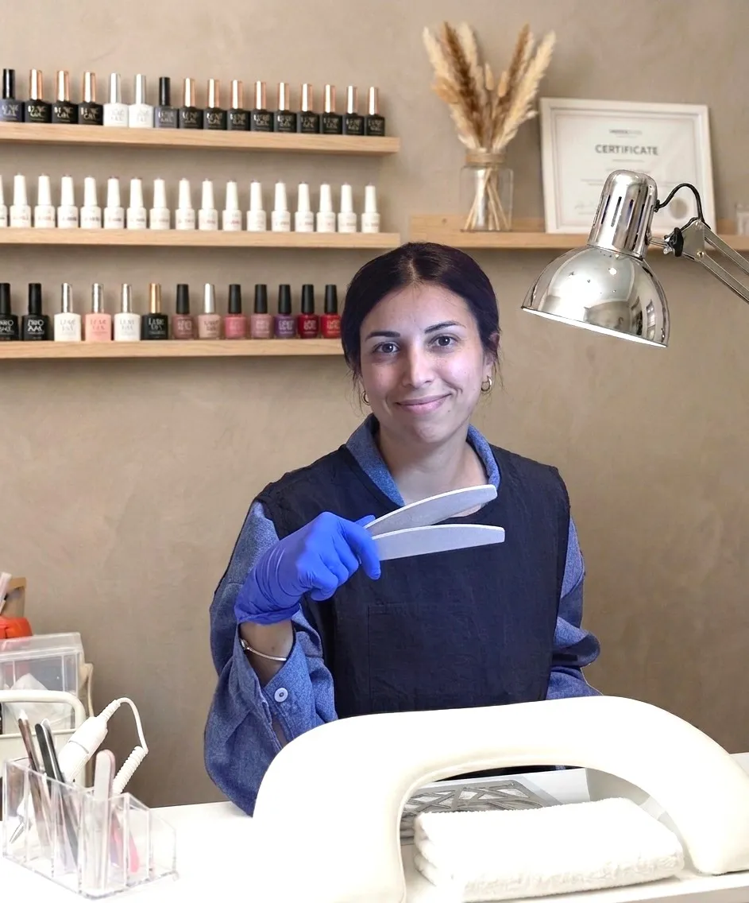
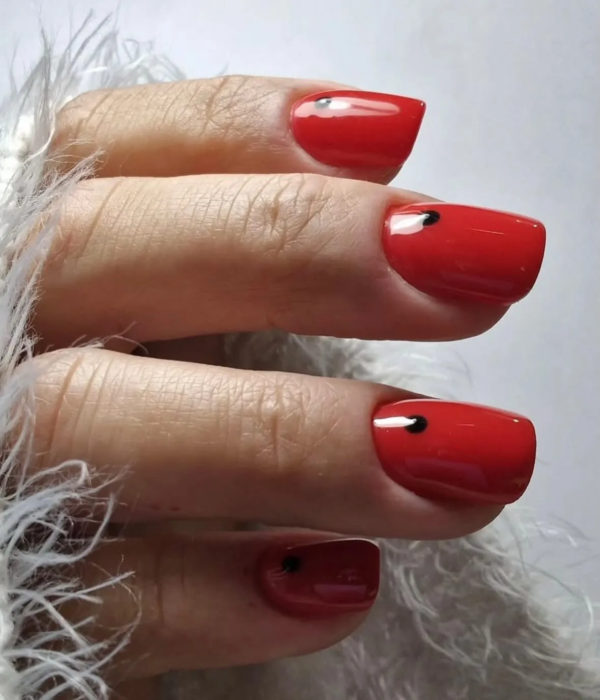

Studio Onicotecnica Rovetta - Bergamo
Un'esperienza di cura esclusiva dove ogni dettaglio conta e nulla è lasciato al caso. Nail art, Manicure, Pedicure e rituali di benessere in un ambiente di lusso sereno.


La nostra storia
Softique Beauty Nail nasce dalla passione per la bellezza e dall'amore per ogni dettaglio. Il nostro studio è un rifugio di eleganza, dove ogni cliente è accolto come ospite speciale.
Uniamo tecniche all'avanguardia con prodotti di alta gamma, garantendo risultati impeccabili e un'esperienza di benessere totale.
Solo prodotti certificati e tecniche professionali
Ogni trattamento è su misura per te
Spazio progettato per il massimo comfort
Specialista in continua formazione
I nostri trattamenti
Creazioni uniche e personalizzate con tecniche artistiche avanzate. Dalla semplicità alla complessità, ogni unghia è una tela.
Trattamenti per mani e piedi con prodotti lussuosi e strumenti sempre sanificati ad ogni cliente. La cura che meriti.
Copertura unghie in gel. Unghie perfette, naturali e durature per ogni occasione.
Semipermanente classico e con rinforzo per donare alle tue unghie lo stile che meriti
Come funziona
Dal primo contatto al risultato finale, ogni momento è curato per offrirti il massimo del comfort e della qualità.
Ascoltiamo i tuoi desideri e ti consigliamo il trattamento perfetto per te
Prepariamo la postazione con cura e igienizziamo ogni strumento
Eseguiamo il servizio con maestria e attenzione alle tue esigenze
Ammiri il risultato e ricevi consigli per mantenerlo nel tempo
Le nostre creazioni
Cosa dicono di noi
Molto brava e professionale! Partivo da una situazione non semplicissima, quindi il lavoro richiedeva ancora più cura e precisione, ma il risultato finale è davvero stupendo. Super soddisfatta del semipermanente!
Mi sono trovata davvero benissimo! Roberta è molto professionale, gentile e delicata. Mi ha fatta sentire subito a mio agio ed è stata attenta a ogni dettaglio. Ha saputo soddisfare pienamente tutte le mie richieste con grande precisione e cura. Consiglio assolutamente i suoi servizi a chi cerca competenza, disponibilità e un trattamento di qualità.
Sono stata da Roberta per fare semipermanente, non mi durava con altre estetiste, con lei mi dura un mese senza neanche una piccola sbeccatura dello smalto, incredibile!! La consiglio, gentile, bravissima nel suo lavoro e molto professionale.
Domande frequenti
Lo studio si trova presso il centro Estetico Samsara, in Via Antonio Magri 3/A a Rovetta (BG) in alta Val Seriana.
Per noi l'igene e la sicurezza sono una prioritá assoluta. Tutti gli strumenti vengono sterilizzati ad alta temperatura ed i materiali usa e getta vengono sostituiti prima di ogni singolo appuntamento.
Tutti i prodotti che utilizziamo sono rigorosamente TPO e DMTA free.
Puoi scriverci su WhatsApp al +39 348 887 8623 oppure contattarci tramite Instagram. Lo studio riceve solo su appuntamento, dal lunedì al venerdì dalle 14:30 alle 19:00.
Si. Per garantire un servizio di alto livello è necessario preparare gli strumenti ed i materiali in anticipo, nonchè allocare il tempo necessario al tipo di servizio che si desidera.
Dove siamo
Siamo nel cuore di Rovetta, in Val Seriana. Ti aspettiamo per coccolarti in un ambiente elegante e rilassante.
Via Antonio Magri, 3/A
24020 Rovetta (BG)
Lun – Ven: 14:30 – 19:00
Sabato: Chiuso
Domenica: Chiuso